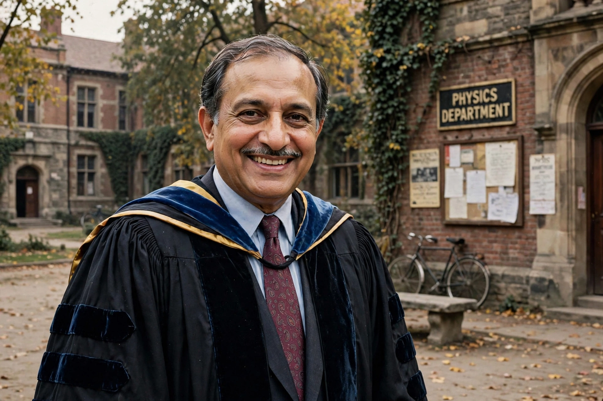

Abdus Salam
| Born | 29 January 1926, Jhang, British India |
|---|---|
| Died | 21 November 1996 (aged 70), Oxford, England |
| Known for | Electroweak unification, Pati–Salam model |
| Awards | Nobel Prize in Physics (1979) |
| Founded | ICTP, Trieste (1964) |

[Image: Photograph of Abdus Salam in academic dress]Abdus Salam (29 January 1926 – 21 November 1996) was a Pakistani theoretical physicist. He shared the 1979 Nobel Prize in Physics with Sheldon Glashow and Steven Weinberg 'for their contributions to the theory of the unified weak and electromagnetic interaction between elementary particles' — the electroweak unification of the Standard Model. He was the first Pakistani and the first Muslim from an Islamic country to receive a Nobel Prize in science.
Salam was a major figure in Pakistan's early scientific establishment — founding its atomic energy commission and space agency and advising its government — before falling from favour after the 1974 constitutional amendment declaring his Ahmadi Muslim community non-Muslim. He founded and directed the International Centre for Theoretical Physics (ICTP) in Trieste, devoted to building scientific capacity in the developing world.
Career
A prodigy from rural Punjab, Salam won scholarships to Government College Lahore and then Cambridge, where he took a double first in mathematics and physics and a doctorate in theoretical physics (1952). He returned to Pakistan, then moved to Imperial College London in 1957, building one of the world's leading theoretical physics groups. With Weinberg (independently) he incorporated the Higgs mechanism into electroweak theory in 1967–68, and with Jogesh Pati he proposed the Pati–Salam model unifying quarks and leptons (1974).
Science in the developing world
In 1964 Salam founded the ICTP in Trieste, directing it until 1993; it has hosted tens of thousands of scientists from developing countries. He also founded the Third World Academy of Sciences (1983, now TWAS). Salam's grave in Rabwah, Pakistan, originally read 'First Muslim Nobel Laureate' until the word 'Muslim' was officially defaced — a reflection of the persecution of Ahmadis that he protested by leaving Pakistan in 1974.